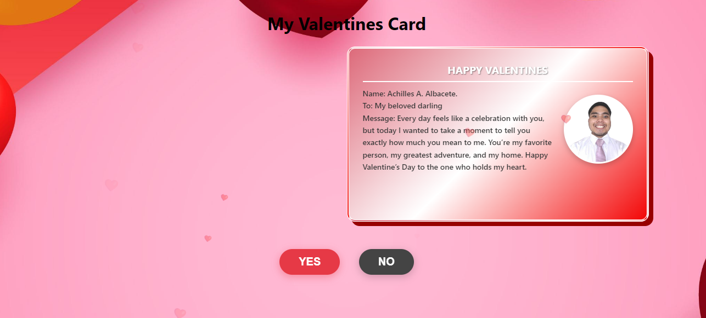
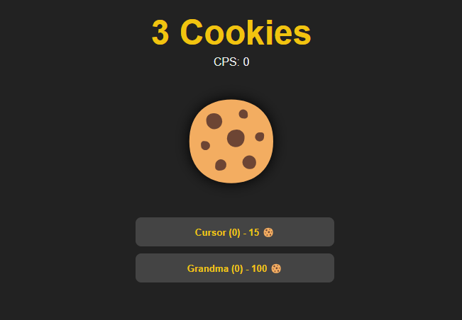
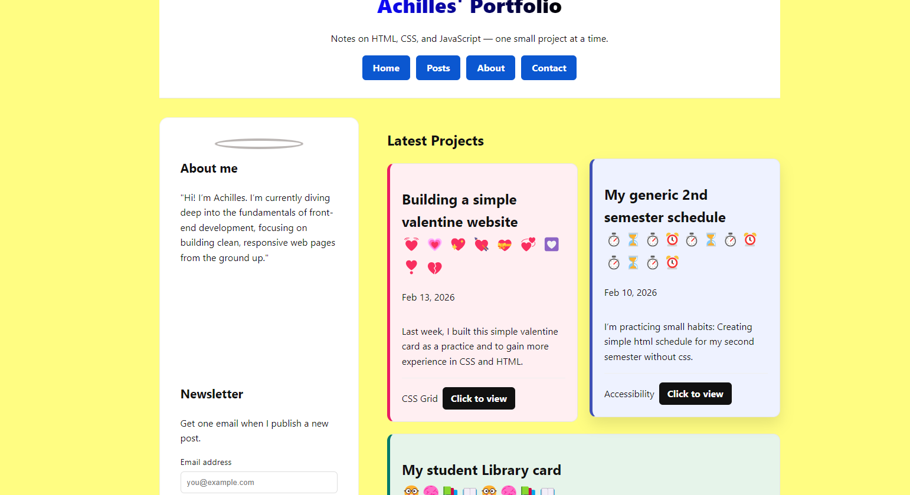
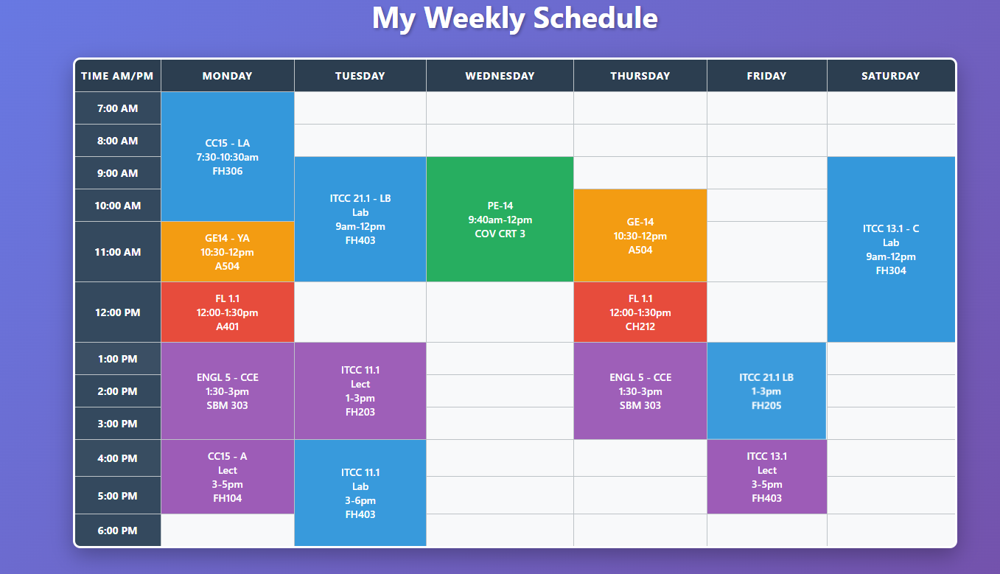

01.
Valentine Card ↗
An interactive, digital greeting card featuring smooth CSS animations and playful interactions.

An interactive, digital greeting card featuring smooth CSS animations and playful interactions.

A basic game where you can be more or less productive, spend you time clicking with you mouse or touchpad, or even you phone.

A retrospective look at my early development journey, showcasing the evolution of my design style.

A schedule I currently have as of 2nd semester on a time table, but with css. I also provided a "After and Before" flip card feature
My descent into web development began with a fascination for the deep, underlying structures of the internet. Like exploring the abyssal zones of the ocean, I started at the surface with accessible design.
I am currently diving deeper into the complex currents of backend logic and data streams. Every project is an expedition—learning to navigate the pressures of modern frameworks and charting unknown territories of code.
Looking ahead, I aim to surface with cleaner, more efficient solutions. I will constantly sink my teeth into new languages, ensuring my technical reach continues to grow deeper into full-stack development.
Crafting responsive, interactive, and user-friendly web interfaces. Focused on building clean layouts and smooth animations from the ground up.
Diving beneath the surface to build robust server-side logic, manage data streams, and ensure seamless communication across the full stack.
Dedicated to writing maintainable code while navigating modern version control, containerization, and deployment pipelines.